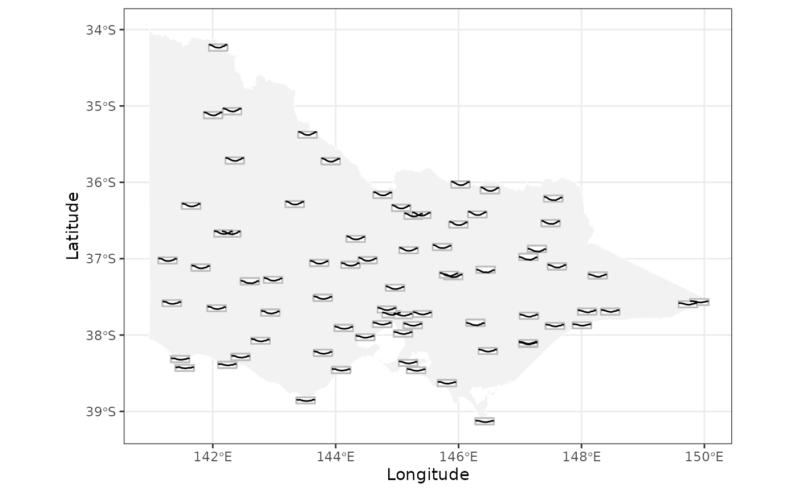

Sometimes, we wish to communicate spatial and temporal information collectively through visualisation. This can be done through making faceted maps across time, creating map animation, or in interactive graphics, constructing linking between maps and time series plot.
This vignette will introduce a type of spatio-temporal plot, glyph map, which displays spatial and temporal information in a single plot using linear algebra.
What is a glyph map?
Glyph maps are initially proposed in Wickham et al. (2012) and the idea is to transform the temporal coordinates into the spatial coordinates so that time series plot can be displayed on the map. The following diagram illustrates how the transformation works:

Subplot (1) and (2) show the location of a weather station and its
associated maximum temperature in 2020. In (3), the same time series is
transformed into the spatial coordinates with a defined
height and width using linear algebra
(Equation 1 in Wickham et al. (2012)). The
transformed time series can then be placed on the map in (4). A polar
transformation (Equation 2 in Wickham et al.
(2012)) is also available with wrap the time series plot into a
circle and it is useful to visualise seasonality.
The package GGally initially implement the glyph map. It
uses glyphs() to calculate the axis transformation and then
uses geom_polygon() to draw the map.
gly <- glyphs(data, x_major = ..., x_minor = ..., y_major = ..., y_minor = ..., ...)
# `gx`, `gy`, and `gid` are created within `glyphs()`
ggplot(gly, aes(gx, gy, group = gid)) +
geom_path()Four variables are required to construct a glyph map:
x_major, y_major, x_minor, and
y_minor. The major axes are the coordinates used to create
the map and in the illustration above
x_major = long, y_major = lat. The minor axes are the x/y
variable used to construct the time series
plot(x_minor = date, y_minor = tmax in above).
Glyph map in cubble
The cubble package implements the glyph map in a
geom_glyph(), which perform the linear algebra internally
as data transformation before the plot rendering. This allows you to use
the conventionally aes() syntax within
geom_glyph() to specify the four major/minor axes:
data |>
ggplot() +
geom_glyph(aes(x_major = ..., x_minor = ..., y_major = ..., y_minor = ...))Reference line and box can be added by separate geoms
(geom_glyph_box(), geom_glyph_line()) with the
same aesthetics (x_major, x_minor, y_major, y_minor) and to
avoid repetition, you may want specify them collectively in
ggplot():
data |>
ggplot(aes(x_major = ..., x_minor = ..., y_major = ..., y_minor = ...)) +
geom_glyph_box() +
geom_glyph_line() +
geom_glyph()If you want add additional layer to the plot, i.e. an undelying map,
that does not use the four glyph map aesthetics, the argument
inherit.aes = FALSE is handy:
data |>
ggplot(aes(x_major = ..., x_minor = ..., y_major = ..., y_minor = ...)) +
geom_sf(data = MAP_DATA, inherit.aes = FALSE)
geom_glyph_box() +
geom_glyph_line() +
geom_glyph()Taking the output from the Get started page, we can visualise the different in average temperature curve between 1971 - 1975 and 2016 - 2020 using the glyph map:
vic_map <- ozmaps::abs_ste %>% filter(NAME %in% c("Victoria"))
df %>%
ggplot(aes(x_major = long, y_major = lat,
x_minor = month, y_minor = tmax)) +
geom_sf(data = vic_map,
fill = "grey95", color = "white",
inherit.aes = FALSE) +
geom_glyph_box(width = 0.3, height = 0.08) +
geom_glyph(width = 0.3, height = 0.08) +
scale_color_brewer(palette = "Dark2") +
coord_sf(xlim = c(141, 150)) +
theme_bw() +
theme(legend.position = "bottom") +
labs(x = "Longitude", y = "Latitude")